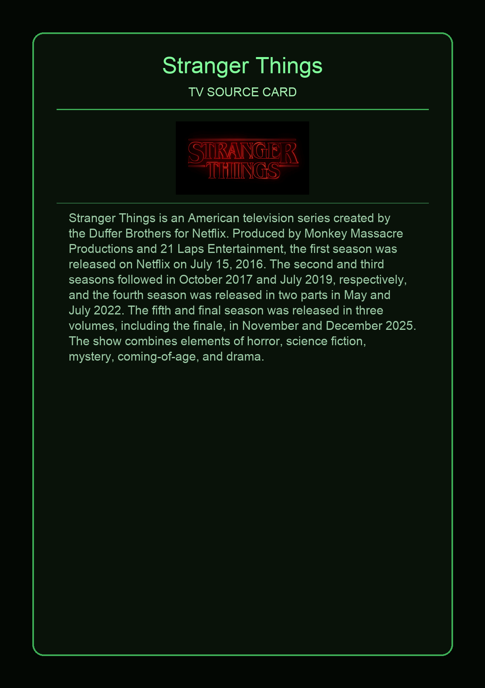
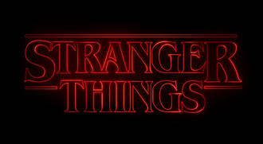

Stranger Things is an American television series created by the Duffer Brothers for Netflix. Produced by Monkey Massacre Productions and 21 Laps Entertainment, the first season was released on Netflix on July 15, 2016. The second and third seasons followed in October 2017 and July 2019, respectively, and the fourth season was released in two parts in May and July 2022. The fifth and final season was released in three volumes, including the finale, in November and December 2025. The show combines elements of horror, science fiction, mystery, coming-of-age, and drama.
This page aggregates references to the source material behind Name Lore entries.